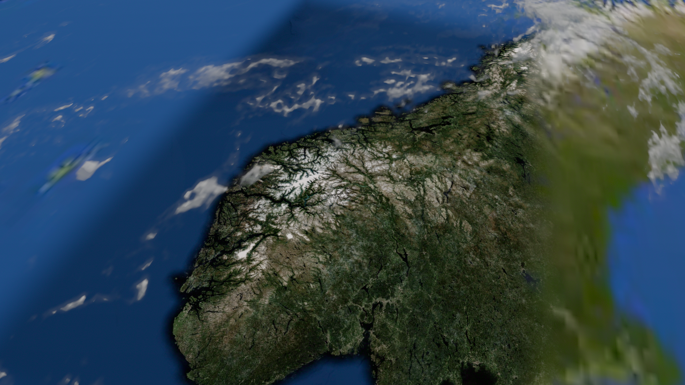
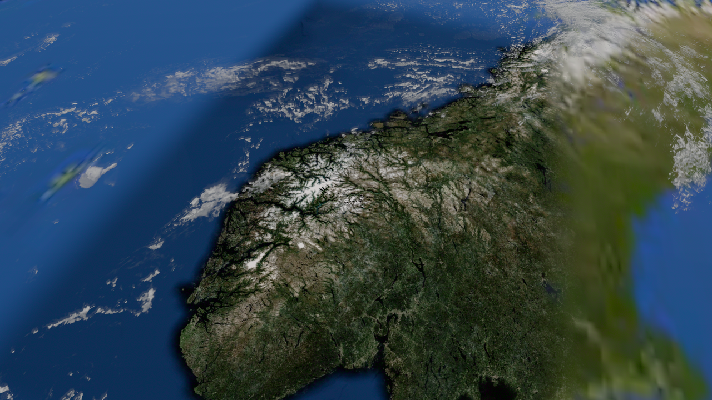
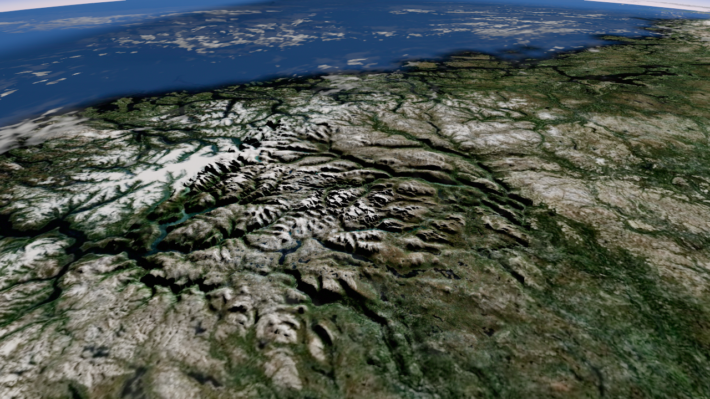

왼쪽은 확보한 8K 원본을 2K로 줄인 대조본, 오른쪽은 원본에서 필요한 지역만 추출한 R8 자료입니다. 같은 카메라·태양·DEM·명암·투명도로 실제 렌더했습니다. 자료는 Solar System Scope 공식 목록과 공개 미러를 구별해 기록했습니다.



자동 카메라 경로 .18→.235→.18입니다. 실제 휠 영상이나 성능 보장으로 취급하지 않습니다. 먼 작은 결의 자글거림과 패치 경계를 함께 확인할 수 있습니다.
글로벌 2K R8 + 지역 4096×1536 R8, mipmap 포함 계산상 약10.7MiB입니다. 8K 전체 RGBA+mipmap 약170.7MiB를 올리는 대신 지역만 사용합니다. 이 수치는 구름 텍스처만의 예산이며, 전체 GPU 메모리·FPS 실측값이 아닙니다.